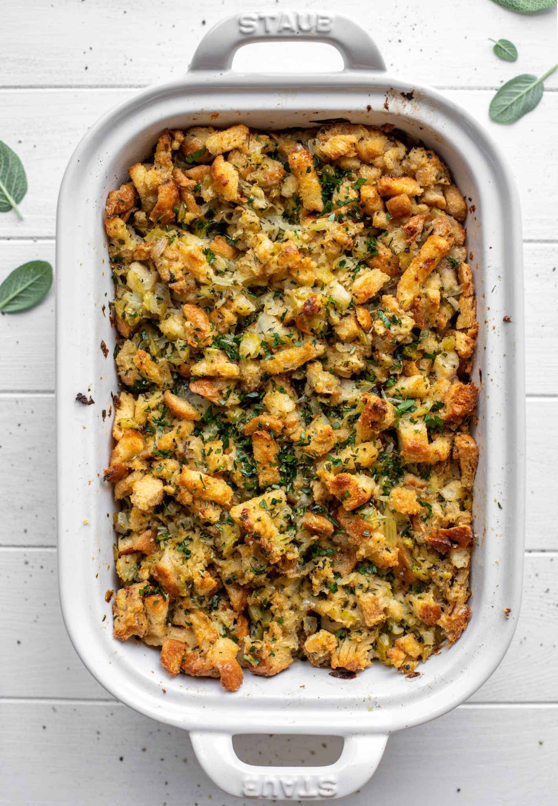

Back
Buttery Herb Stuffing

This is the best stuffing recipe ever! Served as stuffing or dressing, this buttery herb toasted bread dish is absolutely incredible!
Ingredients
- 18 to 24 ounces bread cubes
- 1 cup unsalted butter
- 3 cups diced sweet onion
- 2 cups diced celery
- 6 garlic cloves minced
- kosher salt and pepper
- 3 tablespoons chopped fresh sage
- 3 tablespoons chopped fresh parsley
- 3 tablespoons chopped fresh rosemary
- 2 1/2 cup chicken or vegetable stock
- 2 large eggs
- A mixture of fresh herbs for sprinkling
Instructions
- Note about the bread cubes! You have options here. Stale or toasty bread works best. The first option is that you can cut 1 ½ pounds of bread into cubes, place it in a large baking dish, loosely tent with foil and let it sit overnight. You can also cut the cubes and put them in oven, toasting them at 350 degrees F until they are like croutons, about 15 minutes or so. Finally, you can buy the toasted bread cubes in bags from the store. It’s your choice! You can also choose the size of your cubes. They can be small or larger for a more rustic stuffing.
- My mom has always used a mixture of stale and fresh bread. Also, I like to use different kinds of bread (usually two), like a sourdough and italian, and mix the cubes. It provides great texture.
- Preheat the oven to 350 degrees F. Brush a 9x13 baking dish (you can also use a larger baking dish or a larger foil roasting pan too!) with melted butter, olive oil or spray with nonstick spray. Place the bread in a large mixing bowl (this may be easier for you to stir!) or the baking dish that you will bake it in. You can also separate this into two baking dishes if it's easier.
- Heat the butter in a large skillet or dutch oven over medium heat. Once melted, stir in the onion, celery and garlic with a big pinch of salt and pepper - at least ½ to 1 teaspoon each. Cook until the onions and celery soften, about 8 to 10 minutes. Stir in the sage, parsley and rosemary. Cook for another minute. Stir in 1 cup of stock.
- Pour the onion celery mixture over the bread crumbs and toss well to coat.
- In a small bowl or measuring cup, whisk together the remaining 1 ½ cups stock and 2 eggs.
- Pour that mixture into the bread cubes and stir and fold the bread cubes until thoroughly combined. Bake the stuffing for 45 to 50 minutes, until the internal temperature registers 160 degrees F. If the stuffing is getting too browned, you can tent it with foil.
- I have successfully made this a day ahead of time and reheated it - it’s just as good! emove the pan from the fridge 60 minutes before reheating it. You can also use this mixture to stuff the bird if you wish!
- To serve 4: Cut this recipe in half exactly and bake it in an 8x8 or 9x9 inch dish. I bake for the same amount of time.
- To serve 12 to 18: Double this recipe exactly. Bake in a large baking dish, like a 10x15 roasting pan, or baking in two 9x13 baking dishes. I bake for roughly the same amount of time, or about 15 minutes longer.